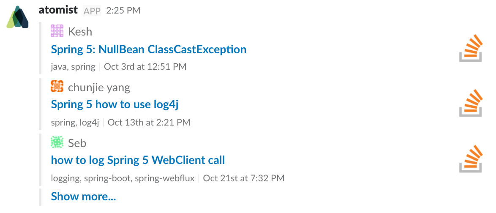

Developer Quick Start
Develop your first automations: a bot command and an event handler.
Set up¶
First, be sure someone in your Slack team has completed the setup. Then, install Node.js
brew install node
install the Atomist CLI
npm install -g @atomist/automation-client
and configure Atomist on your local system
atomist config
Bot commands¶
Atomist recognizes when someone invokes the bot command by sending the intent to the Atomist bot, then collects the required parameters, and invokes the code implementing your command.
Let’s try out a bot command that searches Stack Overflow and replies with the results:
First, clone the project containing the command handler code and all the necessary project files.
git clone https://github.com/atomist-blogs/sof-command.git sof-command \
&& cd sof-command
Hint
Setting up, building, and running an automation client follows the same steps as any other standard TypeScript or JavaScript project.
Next install the project dependencies.
npm install
Then build the project.
npm run build
Finally, start the client process on your local system.
npm start
This last command will start up the client, register the “search so” bot command in your Slack team, and begin writing its logs to your terminal.
Go ahead and test it by going to a channel in your Slack team that the Atomist bot has been invited to and send the bot the command’s intent.
@atomist search so q="spring 5"
If you don’t provide a value for the query parameter, the Atomist bot opens a thread and asks you to enter it. You should get a response that looks something like this:

Congratulations, you just ran your own bot command! For more detailed information about writing your own commands, see the full documentation for commands.
Handling events¶
Event handlers react to GitHub pushes, updates to issues, pull requests, or similar events.
Let’s add an event handler that notifies us in Slack when a commit is pushed to a repository - but only if the commit message contains a string like “Crushed #77!”.
This code is in a different automation client, but you get it and run it the same way:
git clone git@github.com:atomist-blogs/event-handler.git event-handler \
&& cd event-handler \
&& npm install \
&& npm run build \
&& npm start
Next, trigger this event handler by making a commit in
a repository that is linked to a Slack channel. The
commit message should include the word “Crushed” followed by a
reference to an issue in the form #N, replacing N with the number
of the issue.
Push that commit and the bot sends a message to the linked channel letting everyone know you crushed it!
For more detailed information about customizing event handling, see the full documentation for events.
Dive in¶
- Atomist Automation Overview
- Commands
- Events
- Crafting sophisticated Slack messages
- Using GraphQL with the automation API